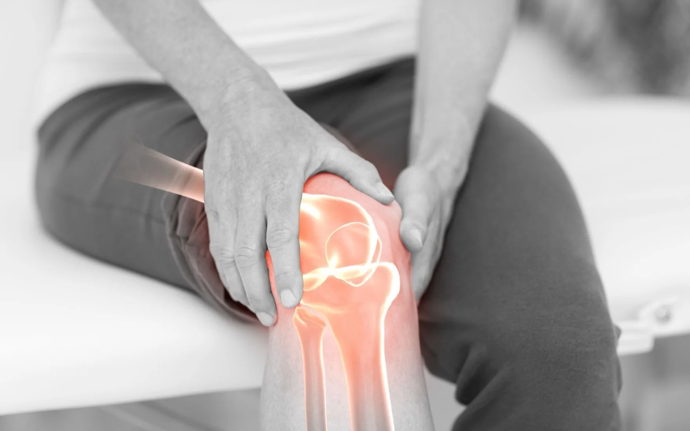
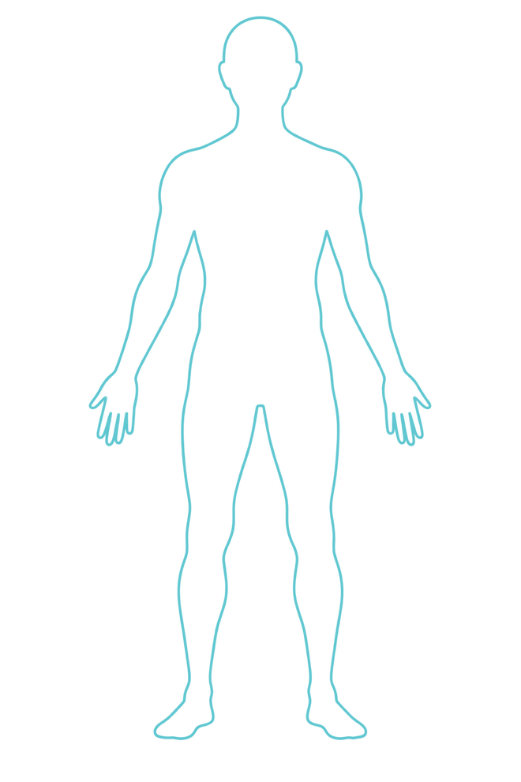

Dr. Dasyam Pallavi
Consultant – Pain Management
MBBS, DA, FIAPM, CIPS — Fellow of the Indian Academy of Pain Medicine; Certified Interventional Pain Sonologist, World Institute of Pain (WIP), USA.
View full profile
A comprehensive pain management centre in Hyderabad. Ultrasound-guided,
non-surgical procedures that treat where the pain begins — and send you home the same day.
Lasting pain rarely starts where it hurts. Halcyon finds the source, then treats it without a scalpel. Four interventional pathways — all image-guided, all day-care.

A small sample of the patient's own blood is drawn, its growth factors concentrated, and placed under ultrasound exactly where the tissue has worn. The body does the repairing.
Explore regenerative medicine
A precise current interrupts the nerve carrying the pain signal. For knee pain Halcyon uses the US FDA-cleared COOLIEF cooled RF system.
Explore radiofrequency ablation
A natural irritant is injected into a slack ligament or tendon to restart the body's own repair response. A short course of small injections, with minimal downtime — some soreness for a day or two is normal.
Explore prolotherapy
Ultrasound-guided fluid separates a trapped nerve from the tissue pressing on it. Relief often begins on the table, and the nerve itself is left intact.
Explore hydrodissection & nerve blocks
From an arthritic knee to a trapped nerve in the face — each with its own image-guided pathway.
TapClick a point to ask about it

Wherever it starts, the plan is the same: find the pain generator first, treat it second.
Consultant – Pain Management
MBBS, DA, FIAPM, CIPS — Fellow of the Indian Academy of Pain Medicine; Certified Interventional Pain Sonologist, World Institute of Pain (WIP), USA.
View full profile
Consultant Radiologist – Musculoskeletal Imaging & Image Guidance
MBBS, MD (Radiodiagnosis), Fellowship in Pain Management. Musculoskeletal ultrasound, imaging correlation and image guidance for pain procedures.
View full profileConsultation, diagnostic ultrasound and — when the scan says it is the right answer — the procedure itself, all in the same appointment. No admission, no general anaesthetic.
01 / 05
Keep scrolling to walk through the visit
My experience at Halcyon Pain Management Center was excellent. The staff was professional and caring, and the treatment I received was top-notch. The facility was clean and well-maintained, providing a comfortable and welcoming environment for patients.
01 / 04
The short answers. Anything else, the team will tell you on the phone.
Call +91 77880 91092 or +91 95536 04226 and the team will find you a slot. Bring any recent X-ray, MRI or ultrasound reports — they often save a second visit. You can also send them on WhatsApp before you come in.
3rd Floor, KKR Commercial Complex, at Kukatpally Y Junction on Moosapet Road, Hyderabad 500072 — above the Max showroom. It is a few minutes from the KPHB and Moosapet metro stations.
Monday to Saturday, 9 am to 6 pm; closed on Sunday. Appointments are spaced so the wait is short — call +91 77880 91092 for today’s slots.
Five steps in one appointment: you arrive and register, the consultant examines you, the painful joint or nerve is scanned by ultrasound in the same room, the findings decide the treatment, and if a procedure is right it is done there and then. Most people are home inside two hours.
Procedures are done under local anaesthetic with ultrasound guidance, so you stay awake and talking throughout. There is no general anaesthetic and no hospital admission — you walk out the same day.
Halcyon is a non-surgical centre — every procedure here is image-guided and done as day care. The one case where a replacement is still the right answer is advanced grade 4 knee arthritis with joint deformity, and you will be told that plainly rather than treated anyway.
It depends on the procedure and how many sittings are needed, so the team gives you a clear figure at the consultation — before anything is booked. Call +91 77880 91092 and they can give you a range once they know what you are being treated for.
That depends on your policy and the procedure. The team can tell you what applies to your case and what paperwork you would need — ask them when you call.
Bring any recent X-ray, MRI, CT or ultrasound reports, a list of the medicines you take, and notes from any earlier treatment for the same pain. Tell the team when you book if you take blood thinners — they need planning before an injection.
Dr. Dasyam Pallavi, Consultant – Pain Management (MBBS, DA, FIAPM, CIPS — Fellow of the Indian Academy of Pain Medicine; Certified Interventional Pain Sonologist, World Institute of Pain, USA), assesses you and performs the ultrasound-guided procedures. Dr. PSS Kiran, Consultant Radiologist – Musculoskeletal Imaging & Image Guidance (MBBS, MD Radiodiagnosis, Fellowship in Pain Management), provides musculoskeletal ultrasound evaluation, imaging correlation and image guidance, working with her.